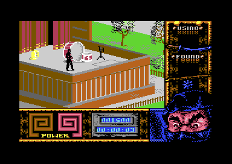

<meta charset="utf-8">
<meta name="viewport" content="width=device-width, initial-scale=1">
<title>Last Ninja Remix</title>
<link rel="preconnect" href="https://fonts.googleapis.com">
<link rel="stylesheet" href="https://fonts.googleapis.com/css2?family=Lato:wght@400;700;900&family=IBM+Plex+Mono:wght@400;500&display=swap">
<style>
:root{
  --bg:#23262d; --paper:#e9e7e1; --surface:#ffffff; --surface-2:#f1efea; --line:#d5d3cc; --line-soft:#e0ded8;
  --ink:#2f3136; --ink-soft:#55585f; --ink-mute:#80838a;
  --link:#1f5fa8; --link-hover:#154480; --accent:#1f5fa8;
  --amber:#c25a00; --cyan:#1f5fa8; --coral:#d04a3a; --green:#2a8a4a; --violet:#4a5bd6; --hl:#fff0c2;
  --chip:#2f3136; --chip-ink:#ffffff;
  --c64blue:#40318d; --c64grey:#686868;
  --fd:'Lato',system-ui,sans-serif; --fb:'Lato',system-ui,sans-serif; --fm:'IBM Plex Mono',ui-monospace,Menlo,monospace;
  --col:1080px; --gx:68px; --fs:17px; --lh:1.6; --hw:900; --h1:46px; --h2:26px; --sy:48px; --pp:26px; --r:10px;
  --plate-shadow:0 1px 2px rgba(0,0,0,.05),0 4px 14px rgba(0,0,0,.05);
}
*{box-sizing:border-box}
html{background:var(--bg);min-height:100%}
body{background:var(--paper);color:var(--ink);font-family:var(--fb);font-size:var(--fs);line-height:var(--lh);max-width:var(--col);margin:0 auto;min-height:100vh;padding:0 0 4rem}
h1,h2,h3{font-weight:var(--hw);letter-spacing:-.01em;text-wrap:balance;color:var(--ink);margin:0}
.wrap{padding:0 var(--gx)}
.hero{padding:48px var(--gx) 8px;text-align:left}
.eyebrow{font-family:var(--fm);font-size:12px;letter-spacing:.08em;text-transform:uppercase;color:var(--ink-mute);margin:0 0 10px}
.hero h1{font-size:var(--h1);line-height:1.15;letter-spacing:-.02em;margin:0 0 14px}
.hero .sub{margin:0 0 .6em;color:var(--ink-soft)}
section{padding:var(--sy) 0 24px}
section:last-of-type{border-bottom:none}
.fig{font-family:var(--fm);font-size:12px;letter-spacing:.08em;text-transform:uppercase;color:var(--ink-mute);margin:0 0 10px}
h2.t{font-size:var(--h2);margin-bottom:12px}
.lede{color:var(--ink-soft);margin:0 0 30px}
.plate{background:var(--surface);border:1px solid var(--line);border-radius:var(--r);padding:var(--pp);box-shadow:var(--plate-shadow)}
.cap{font-size:14px;color:var(--ink-mute);margin-top:14px;line-height:1.55}
.cap b{color:var(--ink);font-weight:700}
code{font-family:var(--fm);font-size:.82em;background:var(--chip);color:var(--chip-ink);border-radius:4px;padding:2px 6px;white-space:nowrap}

</style>
<style>
a{color:var(--link)} a:hover{color:var(--link-hover)}
.ln-cv{display:block;width:100%;height:auto;image-rendering:pixelated;background:#000;border-radius:4px}
.ln-stack{position:relative}
.ln-stack canvas+canvas{position:absolute;left:0;top:0;background:transparent;pointer-events:none}
.ln-ref{display:block;width:100%;height:auto;image-rendering:pixelated;border-radius:4px}
.ln-bar{display:flex;flex-wrap:wrap;gap:8px;margin:0 0 14px}
.ln-btn{font:inherit;font-family:var(--fm);font-size:12.5px;background:var(--surface);border:1px solid var(--line);border-radius:6px;padding:5px 11px;color:var(--ink);cursor:pointer;line-height:1.3}
.ln-btn:hover{border-color:var(--ink-mute)}
.ln-btn[aria-pressed="true"]{background:var(--accent);border-color:var(--accent);color:#fff}
.ln-out{font-size:15px;color:var(--ink);margin:12px 0 0;min-height:3em;line-height:1.55}
.ln-out b{font-weight:700}
.ln-note{font-family:var(--fm);font-size:13px;color:var(--ink-mute);margin:0 0 10px}
.ln-row{display:flex;flex-wrap:wrap;gap:8px 16px;align-items:center;margin:12px 0 0;font-family:var(--fm);font-size:13px;color:var(--ink-soft)}
.ln-row input[type=range]{flex:1;min-width:160px}
.ln-two{display:grid;grid-template-columns:minmax(0,1fr) minmax(0,1fr);gap:22px;align-items:start}
.ln-table{border-collapse:collapse;width:100%;font-size:14px}
.ln-table th,.ln-table td{text-align:left;padding:7px 8px;border-bottom:1px solid var(--line-soft);vertical-align:top}
.ln-table th{font-family:var(--fm);font-size:11.5px;font-weight:500;color:var(--ink-mute);text-transform:uppercase;letter-spacing:.05em}
.ln-table td.ln-q{font-family:var(--fm);font-size:12.5px}
.ln-scroll{overflow-x:auto}
.ln-gal{display:grid;grid-template-columns:repeat(auto-fill,minmax(40px,1fr));gap:4px;max-height:236px;overflow-y:auto;margin:14px 0 0;padding:2px}
.ln-gal button{background:#b2b2b2;border:2px solid transparent;border-radius:4px;padding:2px;cursor:pointer;line-height:0}
.ln-gal button[aria-pressed="true"]{border-color:var(--amber)}
.ln-gal canvas{width:100%;height:auto;image-rendering:pixelated}
.ln-big{display:block;width:100%;max-width:288px;height:auto;image-rendering:pixelated;background:#b2b2b2;border-radius:4px}
.ln-toks{font-family:var(--fm);font-size:12.5px;line-height:1.9;word-break:break-all;margin:0}
.ln-toks span{padding:1px 3px;border-radius:3px}
.ln-toks .lit{background:var(--surface-2);color:var(--ink)}
.ln-toks .zero{background:#dbe8f7;color:var(--link-hover)}
.ln-toks .esc{background:#ffe1c7;color:var(--amber)}
.ln-key{display:flex;flex-wrap:wrap;gap:6px 16px;font-size:13px;color:var(--ink-soft);margin:10px 0 0}
.ln-key i{display:inline-block;width:11px;height:11px;border-radius:2px;margin-right:6px;vertical-align:-1px}
.ln-code{font-family:var(--fm);font-size:40px;letter-spacing:.2em;color:#edf171;background:#000;border-radius:6px;padding:6px 16px;display:inline-block;margin:6px 0}
@media (max-width:640px){:root{--gx:16px}.ln-two{grid-template-columns:minmax(0,1fr)}}
</style>
<!-- tabs -->
<header class="hero">
  <p class="eyebrow">1990 · System 3</p>
  <h1>Last Ninja Remix</h1>
  <p class="sub">Every area of New York is assembled from small pictures, often more than a hundred of them, drawn one at a time. The lock at the end of the game opens to the time the clock showed when the player finished the fourth level.</p>
</header>
<main class="wrap" data-part="central-park">

<section id="game">
  <p class="fig">01 · The game</p>
  <h2 class="t">Armakuni in New York</h2>
  <p>Last Ninja Remix is System 3's 1990 reissue of Last Ninja 2. The ninja Armakuni is pulled through time into twentieth-century New York, where he has to find and defeat the shogun Kunitoki. The Remix added an intro, changed some of the graphics and replaced the music with new arrangements by Reyn Ouwehand.</p>
  <p>The city is seen from above and to one side. Each of the seven levels (Central Park, The Street, The Sewers, The Basement, The Office, The Mansion and the Final Battle) is a set of areas, one screen each, joined at their edges. Armakuni walks from area to area, fights the enemy waiting in some of them, and picks up the objects he finds, some of which the way ahead needs: Central Park cannot be finished without four of them, nor The Street without two.</p>
  <figure class="plate" style="margin:22px 0 0">
    
    <figcaption class="cap">Central Park, the first level. Armakuni stands on the bandstand. The panel at the bottom holds the two energy spirals, the score and the clock; the one on the right shows the weapon he is using and the object he has found.</figcaption>
  </figure>
</section>

<section id="music">
  <p class="fig">02 · The tunes</p>
  <h2 class="t">Music: each level's tune arrives with its title card</h2>
  <p class="lede">The music is the remix in the name: a tune for the intro and one for each level but the last, which plays The Mansion's again.</p>
  <div class="plate">
    <div id="ln-sid"><p class="ln-note">The player runs in the built site, which serves the listings the tunes come from.</p></div>
    <p class="cap">Each button runs the tune's own player on the kit's 6502 in the page and plays what it writes to the sound chip through a model of the SID. A level's player and tune are the bytes <code data-part="central-park-title">$4000</code>-<code data-part="central-park-title">$4DFF</code> of its first load; the intro's are <code data-part="intro">$B000</code>-<code data-part="intro">$BC41</code>. <code>test_music.js</code> checks every write of 6,000 frames of each tune against the same player run on the kit's simulator over the listing.</p>
  </div>
  <p>A level's tune sits at <code data-part="central-park-title">$4000</code> in the level's first load, with its player: a call to <code data-part="central-park-title">$4000</code> starts it and a call to <code data-part="central-park-title">$4003</code> plays one frame. The engine's raster interrupt makes that call every frame (<code data-part="engine">$1F0E</code>), and so does the loader while the title card waits for Space or fire (<code data-part="engine">$111D</code>), so the music starts with the title card. The loader turns the volume down before it unpacks the rest of the level. On an NTSC machine the interrupt comes 60 times a second, and the engine skips the call on one frame in six (<code data-part="engine">$1EFB</code>) to keep the tunes at their PAL speed.</p>
  <p>The intro's tune has a player of its own at <code data-part="intro">$B000</code>, with different formats for its patterns and instruments. The Mansion and the Final Battle load the same tune, byte for byte.</p>
  <p>Each level's tune holds a line of text at <code data-part="central-park-title">$400C</code>, just after the player's first instructions, that nothing in the game reads. Every one credits Reyn Ouwehand with the music and Falco Paul with the player, in different words:</p>
  <div class="plate ln-scroll">
    <table class="ln-table">
      <thead><tr><th>Level</th><th>The text at $400C</th></tr></thead>
      <tbody>
        <tr><td>Central Park</td><td class="ln-q">MUSIC BY R. OUWEHAND AND PLAYER BY F. PAUL</td></tr>
        <tr><td>The Street</td><td class="ln-q">INCREDIBLE REMIX BY REYN OUWEHAND, PLAYER AND SOUNDS BY FALCO PAUL</td></tr>
        <tr><td>The Sewers</td><td class="ln-q">COOL REMIX BY REYN OUWEHAND AND PLAYER/SOUNDS BY FALCO PAUL</td></tr>
        <tr><td>The Basement</td><td class="ln-q">THIS TUNE IS COMPOSED BY REYN OUWEHAND! THE PLAYER AND SOUNDS ARE DONE BY FALCO PAUL</td></tr>
        <tr><td>The Office</td><td class="ln-q">MUSIC BY REYN OUWEHAND &amp; FALCO PAUL. PLAYER/SOUNDS BY FALCO PAUL</td></tr>
        <tr><td>The Mansion, the Final Battle</td><td class="ln-q">MUSIC COMPOSED BY REYN OUWEHAND WHILE BEING BUGGED BY FALCO, RICHARD &amp; JOHN! PLAYER/SOUNDS BY FALCO</td></tr>
      </tbody>
    </table>
  </div>
</section>

<section id="screen">
  <p class="fig">03 · The screen</p>
  <h2 class="t">A window for the city, framed by the status panel</h2>
  <p class="lede">The whole screen is one multicolour bitmap, in the same mode from top to bottom. The game draws each area into a window of 30 by 18 cells at the top left. The rest is the status panel, which arrives with the engine and stays in memory through every level.</p>
  <div class="plate">
    <div class="ln-bar" id="ln-regions"></div>
    <div class="ln-stack"><canvas id="ln-frame" class="ln-cv" width="384" height="272"></canvas><canvas id="ln-frame-hi" class="ln-cv" width="384" height="272"></canvas></div>
    <p class="ln-out" id="ln-region-out">Press a part of the screen above.</p>
    <p class="cap">One frame of Central Park, recorded in the emulator and drawn here by the site's renderer from the bitmap at <code data-part="">$2000</code>, the screen colours at <code data-part="">$0400</code>, colour RAM and the sprites. All 104,448 pixels of the drawing match the emulator's own picture of the frame; the game changes none of the video chip's registers while the frame is drawn.</p>
  </div>
</section>

<section id="room">
  <p class="fig">04 · Drawing an area</p>
  <h2 class="t">An area is drawn one small picture at a time</h2>
  <p class="lede">A level stores no finished screens. Each area is a scene: a list of pieces, each placed at a column and a row, and each either a small picture or another scene. The level's renderer walks that tree and draws every picture into the window at its place. The slider replays the drawing of one area.</p>
  <div class="plate" id="ln-room">
    <div class="pick"><button class="step" data-d="-1" aria-label="Previous level">‹</button><select id="ln-room-level" aria-label="Level"></select><button class="step" data-d="1" aria-label="Next level">›</button></div>
    <div class="pick" id="ln-room-pick"><button class="step" data-d="-1" aria-label="Previous area">‹</button><select id="ln-room-area" aria-label="Area"></select><button class="step" data-d="1" aria-label="Next area">›</button></div>
    <div class="ln-stack"><canvas id="ln-room-cv" class="ln-cv" width="480" height="288"></canvas><canvas id="ln-room-hi" class="ln-cv" width="480" height="288"></canvas></div>
    <div class="ln-row"><button type="button" class="ln-btn" id="ln-room-play">Play</button><input type="range" id="ln-room-k" min="0" max="0" value="0" aria-label="Pictures drawn"></div>
    <p class="ln-out" id="ln-room-out">The areas are drawn in the built site, which serves the listings they are drawn from.</p>
    <p class="cap">The level's own renderer runs on the kit's 6502 in the page and stops at each call of <code>RenderUiSceneRecord</code> (<code>$8B49</code> in Central Park), which draws one picture. A picture's record starts with its size, the width in cells in the high four bits and the height in the low four, then the eight bitmap bytes of every cell, the screen colours of every cell and the colour RAM byte of every cell, each kind in a block of its own. The outline is the box that size gives at the picture's column and row: in the 13,297 pictures the areas of the seven levels draw, not one pixel falls outside its box.</p>
  </div>
  <p>The same picture is often drawn many times in one area: a stretch of railing, a paving stone, a brick. A composite scene can also swap colours as it places its pieces, and draw them mirrored, so one set of pictures furnishes several areas. Some pictures leave the window unchanged, because they lie outside it or are drawn over pixels that were already the same.</p>
  <p>Every area of every level, as the level starts, is on the <a href="levels.html">Maps / levels</a> tab.</p>
</section>

<section id="loads">
  <p class="fig">05 · The levels</p>
  <h2 class="t">A level is unpacked behind its title card</h2>
  <p class="lede">Each level is one packed file on the disk, which the engine's loader unpacks backwards, from the end, in two pieces. The first is the title card and the tune; the second, unpacked after the player presses Space or fire, is the level itself.</p>
  <div class="plate" id="ln-titles">
    <div class="pick"><button class="step" data-d="-1" aria-label="Previous level">‹</button><select id="ln-title-level" aria-label="Level"></select><button class="step" data-d="1" aria-label="Next level">›</button></div>
    <canvas id="ln-title" class="ln-cv" width="384" height="272"></canvas>
    <p class="cap">Each card is drawn in the page by the level's own <code data-part="central-park-title">DrawTitleCard</code> (<code data-part="central-park-title">$4E00</code> in every first load) on the kit's 6502, over the engine's memory. The panel is the engine's, coloured from the copy of colour RAM it keeps at <code data-part="engine">$0800</code>. In all seven levels every pixel of the play window matches the emulator's picture with the card on show, and for Central Park, the card a new game opens with, so does every pixel of the screen; <code>test_index.js</code> keeps a fingerprint of each. The panel here shows what a new game starts with. On a later card it shows the score, the clock and the energy of the game played to reach it.</p>
  </div>
  <p>The first piece ends at <code data-part="central-park-title">$4E00</code>, and the loader calls that address as soon as the piece is in (<code data-part="engine">$1108</code>). The routine there clears the window and draws the level's picture and name with a small copy of the scene renderer and a scene file of its own, beside the panel. The loader then starts the tune and plays it once a frame until Space or fire on either joystick port is pressed (<code data-part="engine">$1113</code>-<code data-part="engine">$112D</code>), turns the volume down and unpacks the second piece, which writes over the card's code.</p>
  <p>The second piece holds the level's code, its scenes, its animations, its packed sprites and the pictures for the panel, up to near the top of memory, some of it in the RAM under the chips. The engine keeps pages 0 to 3, which hold the game's variables, at <code data-part="">$0C00</code> during a load and puts them back after. Before level 3 it asks for the disk to be turned over (<code data-part="engine">$172B</code>: INSERT SIDE TWO, PRESS SPACE).</p>
</section>

<section id="sprites">
  <p class="fig">06 · The ninja and his enemies</p>
  <h2 class="t">Sprites with the zeros squeezed out</h2>
  <p class="lede">Armakuni and his enemies are drawn from parts. Each frame of an animation lists packed sprites, which the game unpacks one at a time into a 63-byte buffer and merges, mirrored when the fighter faces the other way, into the hardware sprites not on show.</p>
  <div class="plate" id="ln-spr">
    <div class="ln-two">
      <div><canvas id="ln-spr-big" class="ln-big" width="192" height="168"></canvas></div>
      <div><p class="ln-out" id="ln-spr-out" style="margin-top:0">The sprites are drawn in the built site, which serves the listing they come from.</p><p class="ln-toks" id="ln-spr-toks"></p>
        <div class="ln-key"><span><i style="background:#dbe8f7"></i>a run of zeros</span><span><i style="background:#ffe1c7"></i>$68 and a byte taken as it is</span><span><i style="background:var(--surface-2);border:1px solid var(--line)"></i>a byte as it is</span></div></div>
    </div>
    <div class="ln-gal" id="ln-spr-gal"></div>
    <p class="cap">Central Park's 242 packed sprites: the 162 of the main pool (<code>SpriteSourcePointers</code>, <code>$CE54</code>) and the 40 of each of the two groups of extra pictures some enemies' figures are drawn with (<code>$E979</code> and <code>$F1B2</code>). The unpacker on this page is ported from <code>DecodeSpriteMaskRle63</code> (<code>$BF3F</code>); <code>test_index.js</code> unpacks all 242 with the port and with the game's routine on the kit's 6502, and they agree in every byte.</p>
  </div>
  <p>Most of a sprite is empty, so the packing removes zeros. A byte from <code>$69</code> to <code>$6F</code> stands for a run of one to seven zero bytes. A <code>$68</code> says that the byte after it is to be copied as it is, which lets a sprite hold a byte from <code>$68</code> to <code>$6F</code> of its own. Every other byte is copied as it is. Packed, the main pool takes 6,544 bytes, where its 162 sprites take 10,206 unpacked.</p>
  <p>In the frame in section 03, Armakuni is three of the machine's eight sprites: two black ones, one above the other, and a third laid over the upper one that adds a few light red pixels.</p>
</section>

<section id="energy">
  <p class="fig">07 · The enemy's energy</p>
  <h2 class="t">A beaten enemy gets its strength back while the player is away</h2>
  <p class="lede">Each area remembers when its enemy was knocked down. When Armakuni comes back, the game gives the enemy back energy for the time that has passed: none for the first two seconds, then a half-cell of the spiral for every 32 ticks of the game's clock, and the whole spiral after about 29 seconds.</p>
  <div class="plate" id="ln-energy">
    <canvas id="ln-energy-cv" class="ln-cv" width="336" height="168" style="max-width:504px"></canvas>
    <div class="ln-row"><label for="ln-energy-t">Ticks since the enemy fell</label><input type="range" id="ln-energy-t" min="0" max="1600" value="700"></div>
    <p class="ln-out" id="ln-energy-out">The spiral is drawn in the built site, which serves the listings it comes from.</p>
    <p class="cap">The energy is worked out by a port of <code>RebuildEnemyMeterFromElapsedTicks</code> (<code>$B3D6</code>), and the spiral coloured as the engine's interrupt leaves it (<code data-part="engine">$1E69</code>-<code data-part="engine">$1EBA</code>), in the panel of the frame in section 03. <code>test_index.js</code> runs the port and the game's routine on the kit's 6502 over 4,378 pairs of times, every boundary and wrap of the counter among them, and the spiral port against the engine's code for every energy, counting up and counting down; they agree on every one.</p>
  </div>
  <p>When the enemy's energy reaches zero, <code>DamageEnemy</code> (<code>$B568</code>) keeps where it fell and the game's tick, the 16-bit count at <code>$F0</code>:<code>$E2</code> that CIA 1's timer advances about 50.6 times a second, in tables with an entry for each area (<code data-part="">$0175</code> and <code data-part="">$0187</code>). On entering an area whose enemy is down but will get up again, the game takes the ticks since then, counted round 65,536, divides them by 32 and takes away 2, keeping the result between 0 and 44 (<code>$8F0B</code>).</p>
  <p>An enemy gets up only so many times. Each area's entry in the enemy tables gives, in its high four bits, how many knock-downs put its enemy down for good (<code>enemy_heading_profile</code>, <code>$B6B5</code>, read at <code>$B641</code>); <code>DamageEnemy</code> counts them in the area's byte at <code data-part="">$012D</code>, and at the last one marks the area <code>$FF</code>, an enemy that no longer comes back, and adds to the score a second time. The number rises level by level, and in the Final Battle, where it is 15, the game never puts an enemy down for good (<code>$B5A5</code>):</p>
  <div class="plate ln-scroll">
    <table class="ln-table">
      <thead><tr><th>Level</th><th>Knock-downs before an enemy stays down</th></tr></thead>
      <tbody>
        <tr><td>Central Park</td><td>2, and 1 for the enemy of area 2</td></tr>
        <tr><td>The Street</td><td>3, and 4 for the enemies of areas 16 and 17</td></tr>
        <tr><td>The Sewers</td><td>4</td></tr>
        <tr><td>The Basement</td><td>5</td></tr>
        <tr><td>The Office</td><td>6</td></tr>
        <tr><td>The Mansion</td><td>7</td></tr>
        <tr><td>The Final Battle</td><td>Every enemy gets up again</td></tr>
      </tbody>
    </table>
  </div>
  <p>The spiral itself is 22 screen cells running in from the corner (<code data-part="engine">enemy_energy_spiral_cells</code>, <code data-part="engine">$1D4B</code>). Each cell is lit in two halves: the first 22 steps colour one half of each cell in turn, in brown, and the next 22 go round again adding the other half in orange. The raster interrupt moves the spiral one step toward the enemy's energy every other tick, so it grows and shrinks rather than jumps. The player's spiral is the same, mirrored, in red and light red.</p>
</section>

<section id="controls">
  <p class="fig">08 · Controls</p>
  <h2 class="t">A second fire button picks weapons without the keyboard</h2>
  <p class="lede">The game reads a joystick in port 2 and a few keys. It also reads a second fire button, wired as on the three-button pad of Commodore's C64GS console, which picks weapons and objects without the keyboard.</p>
  <div class="plate ln-scroll">
    <table class="ln-table">
      <thead><tr><th>Control</th><th>What it does</th><th>Where</th></tr></thead>
      <tbody>
        <tr><td>Joystick in port 2</td><td>Armakuni's moves; the stick's five bits go into bits 0 to 4 of <code>$7C</code></td><td><code>$9418</code></td></tr>
        <tr><td>Second button</td><td>The next weapon; with fire held as well, the next object</td><td><code>$951B</code>, <code>$9497</code></td></tr>
        <tr><td>Space</td><td>The next weapon</td><td><code>$951B</code></td></tr>
        <tr><td>F1</td><td>Sound off and on</td><td><code data-part="engine">$1EEA</code></td></tr>
        <tr><td>F3, F5</td><td>Step through the objects</td><td></td></tr>
        <tr><td>F7</td><td>Pause</td><td><code data-part="">$02B7</code></td></tr>
        <tr><td>J</td><td>Turns the stick's directions through an eighth of a turn, in three settings, shown as MODE where the score is</td><td><code data-part="">$03F3</code>, <code>$A50D</code></td></tr>
        <tr><td>RUN/STOP</td><td>Armakuni dies</td><td><code data-part="">$0267</code></td></tr>
      </tbody>
    </table>
  </div>
  <p>The second button is read from port 2's paddle line: the game sets <code>$DC00</code> to select that port's paddles and reads <code>$D419</code>, where a value below <code>$80</code> means pressed. Whichever button the player presses to start a level, at the credits card that opens it and comes back after a GAME OVER, becomes the fire button: if it was the second one, the game sets <code>$AC</code> (<code>$8EE8</code>-<code>$8EF9</code>) and from then on swaps the two buttons whenever only one of them is down.</p>
  <p>Each press of J turns the meaning of the stick by an eighth of a turn, so that pushing up walks Armakuni in another of the city's directions than straight up the screen. The setting, 0 to 2, goes into <code data-part="">$03F3</code> and is added to his heading (<code>$A50D</code>). The joystick also hides a way to end any level at once, which <a href="discoveries.html#level-skip">Discoveries</a> walks through.</p>
</section>

<section id="lock">
  <p class="fig">09 · The last lock</p>
  <h2 class="t">The code for the last door is read from the clock</h2>
  <p class="lede">The Final Battle's lock asks for four digits. They are the minutes and seconds the clock showed when the player finished The Basement, and The Office shows them on a note for anyone who picks it up.</p>
  <div class="plate" id="ln-lock">
    <div class="ln-row"><label for="ln-lock-m">Minutes</label><input type="range" id="ln-lock-m" min="0" max="59" value="42"><label for="ln-lock-s">Seconds</label><input type="range" id="ln-lock-s" min="0" max="59" value="7"></div>
    <p class="ln-out" id="ln-lock-out">The code is worked out in the built site, which serves the listings it comes from.</p>
    <div class="ln-code" id="ln-lock-code">----</div>
    <p class="cap">The code comes from the engine's clock by a port of <code data-part="basement">CopyClockToCode</code> (<code data-part="basement">$B9B2</code> in The Basement); <code>test_index.js</code> runs the port and the game's routine on the kit's 6502 for all 3,600 minutes and seconds, and they give the same code for every one.</p>
  </div>
  <p>The clock is three text records in the engine, hours, minutes and seconds, each digit kept as the number of its glyph. As The Basement ends, after its items and score are saved, the level copies the minutes' and seconds' glyphs into the four bytes of the lock code at <code>$0297</code>-<code>$029A</code>. The clock keeps running and is carried into the next level, so the code is the time at that one moment.</p>
  <p>The Office prints the code in the panel's second box when Armakuni picks up the object in its area 3 (<code data-part="office">ObjectShowCode</code>, <code data-part="office">$B8EF</code>). A GAME OVER in The Office copies the clock into the code again (<code data-part="office">$B922</code>), so a code noted before it no longer opens the lock. In the Final Battle the lock shows four zeros in the same box and stops the game while the player sets them with the joystick, left and right to move between digits and up and down to change one; with all four set it compares them with the code (<code data-part="final-battle">EnterCodeCheck</code>, <code data-part="final-battle">$B381</code>). A new game starts the code at 1111 (<code data-part="engine">$0EAF</code>), before any level has set it.</p>
</section>

</main>
<footer style="margin:16px 0 0;padding:22px var(--gx) 0;border-top:1px solid #e0ded8;font-family:'IBM Plex Mono',ui-monospace,Menlo,monospace;font-size:12px;color:#80838a"><a href="https://github.com/gamesexplained/gamesexplained" style="color:#1f5fa8;text-decoration:none">GitHub</a> · <a href="https://discord.gg/3V9GWyRDWV" style="color:#1f5fa8;text-decoration:none">Discord</a><br>© Games Explained contributors. Write-ups, facts and symbol maps are available under <a href="https://creativecommons.org/licenses/by-sa/4.0/" style="color:#1f5fa8;text-decoration:none">CC BY-SA 4.0</a>; code under <a href="https://opensource.org/licenses/MIT" style="color:#1f5fa8;text-decoration:none">MIT</a></footer>
<script src="../../lib/c64.js"></script>
<script src="../../lib/cpu6502.js"></script>
<script src="../../lib/sid.js"></script>
<script>
/* lnr-music */
// createDriver for C64Sid: runs the game's own two tune players on the kit's 6502 (C64Cpu, from
// ../../lib/cpu6502.js, which sid.js passes to createDriver). Each level's player is at $4000 in
// the level's title load: the engine's interrupt starts it with A = 0 at $4000 ($1EF8) and then,
// in the same interrupt and on every one after, plays a frame at $4003 ($1F0E). The intro's player
// is at $B000: $B000 starts the tune and plays its first frame ($0897), and the intro's interrupt
// plays every later frame at $B003 ($10C3). D.tunes gives each button its player's bytes as
// [[address, bytes]], the calls of its first frame and the call of every later one. A read of a
// SID register returns the data bus, except $D41B and $D41C, which return voice 3's waveform and
// envelope.
const LNR_TUNES = [
  { name: 'The intro', part: 'intro', bytes: [0xB000, 0xBC42], first: [0xB000], play: 0xB003 },
  { name: 'Central Park', part: 'central-park-title', bytes: [0x4000, 0x4E00], first: [0x4000, 0x4003], play: 0x4003 },
  { name: 'The Street', part: 'street-title', bytes: [0x4000, 0x4E00], first: [0x4000, 0x4003], play: 0x4003 },
  { name: 'The Sewers', part: 'sewers-title', bytes: [0x4000, 0x4E00], first: [0x4000, 0x4003], play: 0x4003 },
  { name: 'The Basement', part: 'basement-title', bytes: [0x4000, 0x4E00], first: [0x4000, 0x4003], play: 0x4003 },
  { name: 'The Office', part: 'office-title', bytes: [0x4000, 0x4E00], first: [0x4000, 0x4003], play: 0x4003 },
  { name: 'The Mansion and the Final Battle', part: 'mansion-title', bytes: [0x4000, 0x4E00], first: [0x4000, 0x4003], play: 0x4003 },
];
function createDriver(D, C64Cpu) {
  const sid = new Uint8Array(25);
  let m, cpu, c, writes = [], bus = 0, env3 = 0, osc3 = 0, started = false, on = false;
  const io = {                                                  // the chips at $D000-$DFFF
    read(ad) { if (ad >= 0xD400 && ad < 0xD800) { const r = ad & 0x1F; return r === 0x1B ? osc3 : r === 0x1C ? env3 : bus; } return m[ad]; },
    write(ad, val) { if (ad >= 0xD400 && ad < 0xD800) { const r = ad & 0x1F; if (r < 25) { sid[r] = val; writes.push(r, val); } bus = val; return; } m[ad] = val; },
  };
  const call = (ad) => cpu.call(ad, { a: 0, x: 0, y: 0 }, { maxSteps: 200000 });
  return {
    sid,
    get writes() { return writes; },
    readback(e3, o3, b) { env3 = e3; osc3 = o3; bus = b; },
    init(t) {
      c = D.tunes[t];
      m = new Uint8Array(0x10000);
      for (const [ad, bytes] of c.mem) m.set(bytes, ad);
      cpu = new C64Cpu.CPU(m, { port: 0x35, io });
      sid.fill(0); writes = []; bus = 0; started = false; on = true;
    },
    stop() { writes = []; on = false; },
    play() {
      writes = [];
      if (!on) return;
      if (!started) { started = true; for (const ad of c.first) call(ad); } else call(c.play);
    },
    playing() { return on; },
  };
}
// end of lnr-music
</script>
<script>
/* lnr-scene */
// The game's own scene renderer at work in the page. lnrLevel(L) puts a level together as the game
// has it in play: L.engine, L.first and L.second are the { ram, has } of the engine's listing, the
// level's first load (its title, used below $4E00) and its second load (from $4E00 up), as
// C64.load gives them. L.header is the address of the scene header in the first load: the number
// of scenes, a relocation word, 32 area slots (a scene and a background colour each) and the scene
// pointers. The second load's pointers were adjusted by the word as play began, and those below
// $4E00, which the first load holds, are adjusted here as the game's relocation loop does it.
// area(n, objects, hooks) clears the play window with the engine's routine at $140E and draws slot n
// with L.render (the level's RenderSceneForRoomInA) on the kit's 6502 (C64Cpu), which runs hooks
// (the simulator's: { address: fn(cpu) }) as it reaches each address; with objects it then runs
// L.objects (DrawInactiveObject) for slot n with no item taken. It returns the play window, 30 by
// 18 cells of multicolour bitmap, as 240 by 144 palette indices: bitmap at $2000, screen at $0400,
// colour RAM as the routines wrote it and the background as they wrote $D021. pixels() gives the
// window as it stands, from inside a hook too.
function lnrLevel(L) {
  'use strict';
  const base = new Uint8Array(0x10000);
  for (let a = 0; a < 0x10000; a++) if (L.engine.has[a]) base[a] = L.engine.ram[a];
  for (let a = 0; a < 0x4E00; a++) if (L.first.has[a]) base[a] = L.first.ram[a];
  for (let a = 0x4E00; a < 0x10000; a++) if (L.second.has[a]) base[a] = L.second.ram[a];
  const H = L.header, scenes = base[H], rel = base[H + 1] | base[H + 2] << 8, ptrs = H + 0x43;
  for (let i = 0; i < scenes; i++) {
    const s = i < 128 ? ptrs + 2 * i : ptrs + 0x100 + 2 * (i - 128);
    if (s >= 0x4E00) continue;
    const v = ((base[s] | base[s + 1] << 8) - rel) & 0xFFFF;
    base[s] = v & 0xFF; base[s + 1] = v >> 8;
  }
  const m = new Uint8Array(0x10000), colour = new Uint8Array(0x400);
  let bg = 0;
  const cpu = new C64Cpu.CPU(m, { port: 0x35, io: {
    read: (a) => { if (a >= 0xD800 && a < 0xDC00) return colour[a - 0xD800]; throw new Error('read of ' + a.toString(16)); },
    write: (a, v) => {
      if (a >= 0xD800 && a < 0xDC00) colour[a - 0xD800] = v & 15;
      else if (a === 0xD021) bg = v & 15;
      else throw new Error('write to ' + a.toString(16));
    } } });
  const regs = (a) => ({ a, x: 0, y: 0, n: 0, v: 0, d: 0, z: 0, c: 0 });
  function area(n, objects, hooks) {
    m.set(base); colour.fill(0); bg = 0;
    cpu.call(0x140E, regs(0), { maxSteps: 2e6 });
    cpu.call(L.render, regs(n), { maxSteps: 2e7, hooks });
    if (objects) {
      m[0xA2] = n;
      m.fill(0, 0x03D8, 0x0400);
      cpu.call(L.objects, regs(0), { maxSteps: 2e7 });
    }
    return pixels();
  }
  function pixels() {
    const px = new Uint8Array(240 * 144);
    for (let r = 0; r < 18; r++) for (let c = 0; c < 30; c++) {
      const s = m[0x0400 + r * 40 + c], cols = [bg, s >> 4, s & 15, colour[r * 40 + c]];
      for (let y = 0; y < 8; y++) {
        const b = m[0x2000 + (r * 40 + c) * 8 + y], o = (r * 8 + y) * 240 + c * 8;
        for (let x = 0; x < 4; x++) px[o + 2 * x] = px[o + 2 * x + 1] = cols[(b >> (6 - 2 * x)) & 3];
      }
    }
    return px;
  }
  return { area, pixels, scenes, slot: (n) => ({ scene: base[H + 3 + 2 * n], bg: base[H + 4 + 2 * n] & 15 }), state: () => ({ m, colour, bg }) };
}
// end of lnr-scene
</script>
<script>
/* lnr-title */
// A level's title card, drawn by the level's own code. lnrTitle(E, T) lays the title load's listing
// (T) over the engine's (E), as C64.load gives them, runs DrawTitleCard ($4E00 in every title load)
// on the kit's 6502 (C64Cpu) and returns a frame for C64.renderFrame: the memory the routine leaves,
// colour RAM as it wrote it over the image the engine keeps of it ($0800-$0BE7), and the video chip's registers as play has them, with the colours and
// modes the routine wrote. Before it writes them the routine waits in the engine for raster line 0
// with the screen on ($150A), so here $D012 reads 0 and $D011 reads $3B.
function lnrTitle(E, T) {
  const m = new Uint8Array(0x10000), colour = new Uint8Array(1024), vic = new Array(0x2F).fill(0);
  for (let a = 0; a < 0x10000; a++) m[a] = T.has[a] ? T.ram[a] : E.has[a] ? E.ram[a] : 0;
  for (let k = 0; k < 1000; k++) colour[k] = m[0x0800 + k] & 15;      // the panel's colours, from the colour copy
  vic[0x11] = 0x3B; vic[0x16] = 0x18; vic[0x18] = 0x18;
  const cpu = new C64Cpu.CPU(m, { port: 0x35, io: {
    read: (a) => {
      if (a >= 0xD800 && a < 0xDC00) return colour[a - 0xD800];
      if (a === 0xD012) return 0;
      if (a === 0xD011) return 0x3B;
      throw new Error('read of ' + a.toString(16));
    },
    write: (a, v) => {
      if (a >= 0xD800 && a < 0xDC00) colour[a - 0xD800] = v & 15;
      else if (a >= 0xD000 && a < 0xD02F) vic[a - 0xD000] = v;
      else throw new Error('write to ' + a.toString(16));
    } } });
  cpu.call(0x4E00, { a: 0, x: 0, y: 0, n: 0, v: 0, d: 0, z: 0, c: 0 }, { maxSteps: 5e7 });
  return { vic, cia2: [0xC7, 0x3F], mem: m, colourMem: colour, writes: [] };
}
// end of lnr-title
/* lnr-sprite */
// The game's sprite unpacker (DecodeSpriteMaskRle63, $BF3F in Central Park), ported. lnrUnpack(m, at)
// reads the packed sprite at address at of memory m and returns { bytes, used, tokens }: the 63 bytes
// of the sprite (24 by 21 pixels, three bytes a row), how many packed bytes it read, and each token
// as [kind, offset, length]: 'lit' a byte as it is, 'esc' $68 and the byte after it, which comes out
// as it is whatever its value, and 'zero' a byte from $69 to $6F, which stands for one to seven
// zeros. Like the game it writes a run whole before it counts, so a run that crossed 63 would write
// past the end (the 242 sprites of Central Park end exactly at 63); bytes holds the first 63.
function lnrUnpack(m, at) {
  const out = new Uint8Array(63 + 7), tokens = [];
  let x = 0, y = 0;
  while (x < 63) {
    const b = m[(at + y) & 0xFFFF];
    if (b >= 0x69 && b < 0x70) { for (let k = 0; k < (b & 7); k++) out[x++] = 0; tokens.push(['zero', y, 1]); y += 1; }
    else if (b === 0x68) { out[x++] = m[(at + y + 1) & 0xFFFF]; tokens.push(['esc', y, 2]); y += 2; }
    else { out[x++] = b; tokens.push(['lit', y, 1]); y += 1; }
  }
  return { bytes: out.slice(0, 63), used: y, tokens };
}
// lnrSprites(m) lists the packed sprites of a level's second load, from their pointers: the 162 of
// the main pool (SpriteSourcePointers, $CE54 in Central Park, each word plus $0E54) and the 40 of
// each of the two groups of an enemy's extra sprite (AuxCompressedSpriteGroup1 and 2, each word
// plus its group's address, less $C000), as { group, n, at }.
function lnrSprites(m, P) {
  const w = (a) => m[a] | m[a + 1] << 8, list = [], main = P.sym('SpriteSourcePointers');
  for (let n = 0; n < 162; n++) list.push({ group: 0, n, at: (w(main + 2 * n) + 0x0E54) & 0xFFFF });
  [P.sym('AuxCompressedSpriteGroup1'), P.sym('AuxCompressedSpriteGroup2')].forEach((g, k) => {
    for (let n = 0; n < 40; n++) list.push({ group: k + 1, n, at: (g + w(g + 2 * n) - 0xC000) & 0xFFFF });
  });
  return list;
}
// end of lnr-sprite
/* lnr-meter */
// The enemy's energy as the game rebuilds it (RebuildEnemyMeterFromElapsedTicks, $B3D6 in Central
// Park), and the spiral that shows it. lnrMeter(now, then) takes the game's tick ($F0:$E2) now and
// the tick when the area's enemy was knocked down ($0187,X:$0175,X) and gives the energy: the ticks
// between, counted round 65,536, divided by 32, less 2, kept between 0 and 44.
// lnrSpiral(v, cells, dim, both) gives the screen bytes the interrupt leaves in a spiral that shows
// v (engine $1E69-$1EBA), as [offset, byte] pairs: cells is the spiral's table, 44 offsets from
// $06FA (enemy_energy_spiral_cells, $1D4B), the spiral's 22 cells in order and then the same 22
// again. Each step up to v colours a cell: dim (one colour nibble) for the first 22 steps, both
// nibbles for the next 22. A cell no step has reached is 0.
function lnrMeter(now, then) {
  const d = (now - then) & 0xFFFF;
  return Math.min(44, Math.max(0, (d >> 5) - 2));
}
function lnrSpiral(v, cells, dim, both) {
  const out = new Map();
  for (let k = 0; k < 44; k++) out.set(cells[k], 0);
  for (let k = 0; k < v; k++) out.set(cells[k], k < 22 ? dim : both);
  return [...out];
}
// end of lnr-meter
/* lnr-code */
// The Final Battle's lock code is the clock. The engine keeps the clock as three text records from
// $1C73 (hours, minutes, seconds), each digit a glyph number ($1B for 0) at $1C77 plus the offsets
// at $1D3F: 0 and 1, 10 and 11, 20 and 21. lnrSetClock(m, h, mi, s) writes a time there;
// lnrCode(m) gives the four bytes CopyClockToCode ($B9B2 in The Basement) copies to $0297-$029A,
// the minutes' and the seconds' digits, as the digits they stand for.
function lnrSetClock(m, h, mi, s) {
  [h / 10 | 0, h % 10, mi / 10 | 0, mi % 10, s / 10 | 0, s % 10].forEach((d, k) => { m[0x1C77 + [0, 1, 10, 11, 20, 21][k]] = 0x1B + d; });
}
function lnrCode(m) {
  return [10, 11, 20, 21].map((o) => m[0x1C77 + o] - 0x1B);
}
// end of lnr-code
</script>
<script>
/* lnr-frame */
// One frame of Central Park in play, recorded in VICE by kit/c64/frame.py and trimmed to the bytes
// the drawing reads: C64.renderFrame draws it.
const LNR_FRAME = {"schema":1,"standard":"PAL","lines":312,"cycles":63,"about":"Central Park in play, the ninja on the bandstand","vic":[100,93,100,93,100,114,0,0,0,0,0,0,0,0,0,0,0,59,0,209,0,7,216,0,25,241,241,0,0,0,255,63,240,255,241,242,243,251,242,250,240,240,240,240,240,240,240],"cia2":[199,63],"cpu":[47,53],"writes":[],"colour":"AgkJAgkJAAICCQkAAAsLDw8AAAsLAAsLAAAACwsAAAAAAAAABwAAAAIJCQIJCQACAgkJCQkPCAAAAAAACwsLCwAAAAsLCQAAAAAPAAAACQACCQkCCQkAAgIJCQAACwsPDw8PAAkACwwAAAALAAkAAAAJCAgJBgkAAgkJAgkJAAICCQkJCQ8IDw8PDw8PCA8AAAAACQwIAAAJAAAAAAkAAAIJCQIJCQACAgkJAQELCwkJDwwPDwwADw8PDwALCQkAAAAAAAAAAAACCQkCCQkAAgIBAg8PDAAAAAsLCQkJDA8ADw8PDw8JAAAAAAAAAA4BAgkJAQAAAAcHAAIADAEBAAAPAAAACwsJCQ8PDw8JCAkJCA8PBgYJCAAABwcAAAAMDQ8CAQwBAg0LCw8AAAAADw8ICwsLDQAADw8ADw8PAAAJAAAAAAAADQALDw8BDAAMDAwMDAwMDAgMDw8ADQ0AAAAICQkIAAAAAAsLCQkAAA0NDQ8PDw0PDAwMDAAICAgICQkJCwALAAAAAAAAAAAAAAwMDAAACwsJCQAAAAAAAAAICAgICQkJAAAAAA8PDwAAAAAAAAAAAAAJCwkMDAwMAAALCwAICAgICQkJAAAAAAgPDw8MDAwAAAAAAAAAAAAACQkJCQkLCQwMDAwICQkJAAAAAAgPDw8ACAgPDwAAAAAAAAAAAAAAAAkLCQsJCQkJCQsJAAAAAAgPDw8AAAAADw8PDAwAAAAAAAAAAAAAAAAJCQkJCQsJCwkJCQgPDw8AAAAADw8PDwAPDw8PDAwAAAAAAAAAAAAADwsLCwkJCQkJCwkAAAAADw8PDwAACAgICA8AAAkJAAAMAAAAAAAAAA8PDw8PCwsLCQkJDw8PDwAACAgICAAAAAkJCQkJCQAAAAAAAAAAAAAAAA8PDw8PDw8LCwkPCAgICAAAAAkJCQkJCQkJAAAAAAAAAAAAAAAAAAAAAAAAAAAAAAAAAAAAAAAICAAACAgAAAAIDgAOAAAAAAAAAAIAAAAAAAAAAAAAAAAAAAAAAAsMAAAAAAAADAwAAAAAAA4AAAoKAgoAAAAACAAAAAAAAAAAAAAACAALAAMDAwMDAwsACQAGAAAACgAKDwoADwAAAAYAAAAAAAAAAAAAAAAAAAAAAAAMDAAAAAkJDAAGAAEAAAIAAAEKAAAAAAAAAAAAAAAAAAAAAAsDAwADAwADAwAJCQAAAAAACgoCCgAAAAoAAAAAAAAAAAAAAAAAAAAAAAAAAAAAAAAACQAGAAAAAAAAAAAAAAYAAAAAAAAAAAAAAAAIAAAAAAAAAAAAAAAAAAAIDgAAAAAAAAAAAAAAAAIPCAcADwQPBA8FDwMOAAsECwIPAAcFDA==","ram":[{"a":1024,"b":"eXJyeXJyAP95cnIJCQmYXFxQUAAA2w0NAAAAAA3bh4eHh4eHgIeHh3lycnlycgD3eXJyv7+5uVBQUFBbDFkJDQAAAMAJC4ePj48Ij4+PBod5cnJ5cnIA93lycgkJCZhfX19fW1tZWVtQUFDAub2H+YkIkJCA8GCHeXJyeXJyAPd5cnK/v7m5XFxcXFxfWV9QUFBQW1lZh4kIAAAAAAiJh3lycnlycgD3eRISKckZkLW1tbVcXFlQX19fX1tZUICWeQAAAACJmJh5cnJ5cnIAB3ly8fmcGQkJuQmQtbW1hVxQXFxfX1+Aqalubm5ubgZgeXJyfAAAAMDAIfEP8M/PCZsJCQkJCZC1tbW1XFxccAYGBgZgD5APkAAAwcEAAACwvCHxz/ECAT8MDNkJkAkJycnJjFxcW3j4gICPgICAmHiwsLAAAAAAALAcssHPGxIPDw8P//+Pj8mYiYlbW1t4OZiQgIAJmGl4CQmQsLCwsAALANDc0P5t//+Pj4wMAACcyPj4UFtdeImYAAAAAJiJeJu5uQkJCZCwsLCwDAyMjIwMAACcyPj4+Pj4+FlZWXiJiQAAAACYiZiwkLC5m7m5CQkJkIwMAACcyPj4+Pj4+P/4+PhZWVmYCYmJiYmJiYmJ+/v7sLCQsLmbubmcyPj4+Pj4+P/4+Pj4z8/IzwAAh/mJaW5ubIlpeLCQsJ/7+/uwsJCw+Pj4+P/4+Pj4+Pj4CMjI+I8AAHiJieZubm+JiXj7+/uwsJCwn/v7+//4+Pj4+Pj4CIyMjIzIjPj4AAB4iYnGxsbGlomYufmfn/v7+7CwkLD4+Pj4CIyMjIyMDADPz8iACAAAeJYGxsYGxgYGaZzJybm5+Z+f+/v7CIyMjIyMDAAAAAiACAAAAABfX3iWxgYGBsYGBm/AwMnJnMnJubmcjMiM/P8AAAiACAAAAABfX19fUFBob29vb29iYm9veHh4eHh4eHh4eHh4h3h4eHhwcHh4B3B4eHhwYG5g5mJiYmJiYgomammYiYmJiYkqoqKioqIZiWywvMvLvLy8CwuJyWZmZmAqKiAgCgIqKmqJCYmJiYmJKqKioqKikIlsy+bm5ubm5gy8gIkGxmYqAiogKiAqCiomiQmJiYmJiSqioqKiovmJvLy8vLywsLzLy4BgBmbAYioSKgoqEioCKomJiYmJiYkqoqKioqKJiQzm5jbm5jbm5suACMZmZiYqAgIKAioqamCJmImJf3h4eHh4KKKiiYnLvLy8vLy8vLzLgIkMZqbm5ibmZmZm5vBmeHh4eHiHeHiHh4dweHh4eHh4eHh4eHh4eHhwYG5uZmZvZmZmZmZmZg=="},{"a":2040,"b":"MDEy"},{"a":3072,"b":"AAAAAAAAAAAAAAAAAAAAAAAAA4AAAQAAAAAAAAAAAAAAAAAAAIAAAAAACIAABAAAAAAAADAABDAAAIAAAAAA"},{"a":3136,"b":"AAAAAAAAAAAABwAAD4AAD4AAD4AAD4AAD4AAHwAAP4AAP4AAf8AAf8AAf8AAf+AAf/AAf/gAP/gAH/AAH8AA"},{"a":3200,"b":"P8AAP8AAP+AAP+AAP2AAPvAAHvAAHvAAPvAAPngAPHgAPHgAPDgAfDgAeDgAMBwAOB4APX4AHoAAAAAAAAAA"},{"a":8192,"b":"r6+vr6+vr6+6urq6urq6uu/v7+/v7+/vr6+vr6+vr6+6urq6urq6uu/v7+/v7+/vVVVVVVVVVVX//////////6+vr6+vr6+vurq6urq6urrv7+/v7+/v76qqqqqqqqqqqqqqqqqqqqqvqqqqqqqqqlpaWlpaWlpaUJlVZVaVZVUAiFBlVpVlVQAAAABQVVVVAAAAAAAAUFW/4+IAID8ADP7I4M4IA8OMtcDtcfAZMvCLz467My4GCLswLPAwGPgPAAAAAAAAAAAAAAAAAAAAAAAAAAAAAAAAAAAAAwAAAAAUPvFejBHi8MQ/AkTioo4z1dra2dnX2dVVqlV9/////2qqqqppVd/1VZZdf3////9VqmVd/////1WqZVf/////V//fX6elqaqlqaWnl1//X1Vm1fX/////V6enZ2dnV1+vr6+vr6+vr7q6urq6urq67+/v7+/v7++vr6+vr6+vr7q6urq6urq67+/v7+/v7+9VVVVVVVVVVf//////////r6+vr6+vr6+6urq6urq6uu/v7+/v7+/v/19VVfX///////9fVVX1/6qqqqqqWlVVr6+vr6+vr69VVVVVVVVVVVVVVVVVVVVVVVVVVVVVVVVVVVVVVVVVVXhZXplZdVlfN7tpaVa2ZV3MgwAA3NWX1U0DR3/OP7ObmrD8IDAAsjAAAAAAAAAAAAAAAAAAAAAAAAAAAAAAAAACRg8fDUMSP9gS8sTQ6OTKYwcDTQwMSjrX29nX2dnV1////f7+/f///36enn7+ff//7e7t7+6d/1X3V+d3d+dV/+nu7u7u7v//2u7v7u7Z///32enn3/f/VVVVVVVdVVVvZ19nZ1dfZ6+vr6+vr6+vurq6urq6urrv7+/v7+/v76+vr6+vr6+vurq6urq6urrv7+/v7+/v71VVVVVVVVVV//////////+vr6+vr6+vr7q6urq6urq67+/v7+/v7++qqqqqqqqqqqqqqqqqqqqqr6qqqqqqqqpaWlpaWlpaWlVVVVVVVVVVVVVVVVVVVVVVVVVVVVVVVVVVVVVVVVVV1pl3VVVVVVXpeV1XV1VVVeWnd2WlaWlqna1tbWellZVQ7VV1V9V1VQAAUFVVVVVVAAAAAFBVVVUAAAAAAABQVQQuPek8zzoygCHgAMSQRMr4OTG6wMDzM9nX2dvX2dvV/+//7//v++/+/f7//v///3Vmt1V31VVVmbvbqplpqqqZu7uqmZmqqruZt6q7rqqqqqqqqqqqqqqqrqquqq6qrl9nb19nb1dfr6+vr6+vr6+6urq6urq6uu/v7+/v7+/vr6+vr6+vr6+6urq6urq6uu/v7+/v7+/vVVVVVVVVVVX//////////6+vr6+vr6+vurq6urq6urrv7+/v7+/v7/9fVVX1////////X1VV9f+qqqqqqlpVVa+vr6+vr6+vWZVVZlVZlWVVmVVlVpVlVVmVWWZVWaVlVZlVZVaVZVVVVVlVVVVlVVVVVVVVVVVVamlpaW1lZaVVVVVVVVVVVVVVVVVVVVVVVVVVVVVVVVVVVVVVVVVVVVVVVVVVVVVVUKaVnmdnWlrAwFJqWVl1bSIqoKCg5WVl19nV29nb19fb79vm++7b7l1V3XXdue15qqqqqqqqqqqqqqqqqqqqqqqqqqqqqqqqqqqqqqqqqqp1VXVddV13bv/77/vvu+e7Z1dnb2dvX1+vr6+vr6+vr7q6urq6urq67+/v7+/v7++vr6+vr6+lr7q6urq1erq17+/v3+/vn+9VVVVVVVVVVf//////////r6+vr6+vpa+6urq6tHmxtu/vxipqAKqoqqpTTzDAwACqqspyHEcHRa+qqqqqqipq//9fVVVVVVWqWlVV9f///6qqqlpVVfX/qqqqqqpaVVWu6qq7qq7qelWZpqpammlVVVVZaqqqalVlZaWlpaWlrVVVVVVVVVVVVVVVVVVVVVVVVVVVVVVVVVVVVVVVVVVVVVVVVVVVVVVrWmZmWVpVVZVm5lXV1dVVnV1e31dXVVWXnpe+u666uvff/9//3///++/7//v/+/+qqqqqqqqqqqqqqqqqqqqqqqqqqqqqqqqqqqqqqqqqqu7b7/vv/+//3/f/9//3//+nn5dfd19/f6+vr6+vr6Wvurq6urV6urXv7+/f7++f76+l/6X/oAAAarVqsAAAAACf4AAAAAAAAAAAAAAAAAAA+q//+q/6r/Cvpf+l/6AAAG6Mero6OjrA/lb5+fn11WUAAAAAAAAAAAICCAACAAIAasra2tra0NCqqqqqqqqqCqqqqqqqqqqqqqq+ra2tr62vqqqqWppamv//X1VVVVVVqlpVVfX///+qqqpaVVX1//uuqqqqWlVVat6quqvqulpVmVVlVpVlVVVVVVVVVVVVWZVVZlVZlWVZlVVmVVmVZVVVVVVVVVVVVVVVVVVVVVVVVVVVVVVVVauurququp+XW6Xuv7v+/+//v5br/+/7/99vr59+v3f//////39q1X3//////3+qVf///////6pV//////9ql11VVVVWv+VapaqqlnaaWqqqr6X/pf+gAABqtWqwAAAAAJ/hAQUFBQUFVH3XVfl5+XUAAAAAAAAAAAAAAAAAAAAAAAAAAAAAAAAAAAAAAAAAAAAAAAAAAAAAlZWVlZWVlZXl5eXl5eXl5aqqqqqqqqqqVVdVV1VdV1dwcHBwf+rq+gAAAAD4lqevqgoAAAAAAABeV1cHAwMDA5pamqqqCgAAqqqqqqqqqgqqqqqqqqqqqqqqqqqqqqqqr6qqqqqqqqr//19VVVVVVapaVVX1////qqqqWlVV9f+qqqqqqlpVVaqqqqqqqqpaWZVVZlVZlWVVmVVlVpVlVVdXW1dXV2VXvre/vra3vrdVdV13XXVVdVZVXXXdVV1VVVVVVVVVVVVZVVVVVVVVVaaVqqqqqqqqVXdVVVVVVVW+qpqqmaaaqlVdVV113XVdplZm2vbe9v4AAAAAAAAAAAAAAAAAAAAADw8PDx93fl+n5+Ov8Ois8AAAAAAAAAAAAAAAAAAAAAAAAAAAAAAAAAAAAAAAAAAAAAAAAAAAAAC/lbXlJT0LC2Xl2fn59lb9qqqqqqqqqulff1/ff399fr+/vru6urr6qqvv76/v6+4AAAAAAAAAAAEBDQU5EOBAAADAQLAQLAQAAAAAAAAAAKoKAAAAAAAAVVVVBQAAAACqqqqqqgoAAKqqqqqqqqoKqqqqqqqqpVWqqqqqpVVVVa+qpVVVVV//+qqqqqVVVVVZlaaqWlvtZ1mXWW6qu5/le7/vubfpa1vm6uvm6+bn6/759fb7/v//r25vrq6uqabnrq6urqeqpnu7u7u7dv937+7u7u5uqmZv7u7u7u+qZmnn7+3maapq/7e////3//+vm6+bn6+bnwAAUFVVVfX/AAAAAFBVVVUAAAAAAABQVQAAAAAAAAAAAAAAAAAAAAAAAAAAAAAAAAAAAAAAAAAAAAAAAAAAAAAAAAAAAAAAAA0pr68rAAAAqup/XlcAAAB/b/tWVQAAAJtebupVAAAAWlWVpfAAAACVVVRQAAAAAAAAAAAACq/wAAAACq/wAAAACq/wAAAAAK/wAAAAAAAA+g8AAAAAD/8AoPoPD////wAAD/////VVD/////VVVVVVVV////////qqqqqqqqqqVVVVVVVVVVVVVVVVVVVVVWq2lW5mXaVqbptlVWmeXWdalbtduX5Zu+bn6uvm6ufr/+/////v/+/7+//39////66nqqapqqqqZu2q7quqqqpm5qrurqqqqt3fVZmaVVVVv3//f///////+//7//v/+6uvm6ubq6+fqqqqqqqqqqqvqqqqqqqqqv//X1VVVVVVUFVVVfX///8AAFBVVVX1/wAAAABQVVVVAAAAAAAAUFUAAAAAAAAAAAAAAAAAAAAAAAAAAAAAAAAAAAAAAAAAAAAAAAAAAAAAAAAAAAAAAAAAAAAAAAAAAAAAAAAAAAAA+g8AAAAAD/8AoPoPD////wAAD/////VVD/////VVVVWqqqVVVVVVVa//////////////////////////////////////+qVeqqqqpV/5qamqqq/5qampqa/5qampqampunddVldXVVWplqpr6pq7ZWnv/Wt+lW9X5urr5+br5ub/7/vv2+7b5vf/9//333ebqqqqqqqqqqqqqqqqqqqqqqqqqqqqqqqqqqqqqqqqqqrf/9//3/fd5u/77/vnu++bm6+bm6uvm69V9V9VVlZWVqqqqvqvqqmpqqqqqqr6r6qqqqqqqqqqqqqqqqqqqqqqr6qqqqqqqqr//19VVVVVVVBVVVX1////AABQVVVV9f8AAAAAUFVVVQAAAAAAAFBVAAAAAAAACqoAAAAACqqqqgAACqqqqqVVCqqqqqVVVVWqqqVVVVVVVa//////////////////////////////////////+qVeqqqqpV/5qamqqq/5qampqa/5qampqampqampqampqampqampqampqampqampqampqampqampqallpmpmZmZmZlVVZaZqZmZmVVVVVWWmambq6+br5ufr5vvu2+/77//vu+f77/v/+/+qqqqqqqqqqqqqqqqqqqqqqqqqqqqqqqqqqqqqqqqqqt3n3/ff/9//57vn++/7//unn593n39ff/39/f39/f39V1dXV1dXV1f9/f39/f39/a+qqampqampVfVfVVZWVlaqqqr6r6qpqaqqqqqq+q+qqqqqqqqqqqqqqqqqqqqqqq+qqqqqqqqq//9fVVVVVVWqqqVVVVVVVa//////////////////////////////////////+qVeqqqqpV/5qamqqq/5qampqa/5qampqampqampqampqampqampqampqampqampqampqampqampqan8/Pz8/Pz8/qioqKioqampqKioqampqamoqampqampqW7GADMADMAwZu5mNgPAMABmZm5mZgYwAOfp59nV59/fX29fb19fXqr///////9pev//////+Vb//////+ZX97v/////la+++////pVv/7////9pe3++////+Vb/q///+/9b7//7q1ub/v7+/v7+/v7+/v7+/v7+/v7+/v7+/v7+/f39/f39/f39/f39/f39/VdXV1dXV1dX/f39/f39/f2vqqmpqampqVX1X1VWVlZWqqqq+q+qqamqqqqqqvqvqv//////+qVeqqqqpV/5qamqqq/5qampqa/5qampqampqampqampqampqampqampqampqampqampqampqampqan8/Pz8/Pz8/qioqKioqampqKioqampqamoqampqampqampqampqamp/Pz8/Pz8/Pz8/Pz8/Pz8/KioqKioqKioAEQAEAFAUFUAAAAAAAAAAAAAAAAAAAAA/fbp///119m+7////+//73u////7//v/6/////////////69nV3W+f////vX51/////////////v/+//7/vv2//7//v/++/7q6+br5ufr5v9/f39/f39/VdXV1dXV1dX/f39/f39/f1XV1dXV1dXV/7+/v7+/v7+/v7+/v7+/v7+/v7+/v7+/v39/f39/f39/f39/f39/f1XV1dXV1dXV/39/f39/f39qampqampqampqampqampqampqampqampqampqampqan8/Pz8/Pz8/qioqKioqampqKioqampqamoqampqampqampqampqampqampqampqampqampqampqampqampqampq6urq6urq6CoqKioqKqlVaioqKqlVVVVqKqv////+qr/////9VVVVQAAAAAAAAAAAAAAAAAAAADr5ubq6+br5v/v++/77tvm+//77/vnu2///v///////1evV/nlX519d9l3f//X9////////////+755tvu++//77tnu+f77/ufq6+bq6+fm/7+rqqqqqqq/v7+/q6qqqr+/v7+/v6uqv39/f39/f39/f39/f39/f1XV1dXV1dXV/39/f39/f39V1dXV1dXV1f+/v7+/v7+/v7+/v7+/v7+/v7+/v7+/v78/Pz8/Pz8/qioqKioqampqKioqampqamoqampqampqampqampqampqampqampqampqampqampqampqampqampq6urq6urq6BUVFRUVFAKqlRUVFAKqqqqVFAKqqqqpVUKqqqqpVVVVVVVWqqqqqqqpVVVVVVVVVWqqqqqqqqqqqqqqqqqqqqqAMwAMAPAMAAMwAAzAAzAMOfr5ufq6+bq+ebb7tvv+++b57vv+//7//////////77/v////7rv//////+7////////+7/////3//f/+7/////+//7//v//6uvp6+Xl1/XVVVVpaqqqqr//////6+qqv////////9f9//////////+/q6qqqqqqv7+/v6uqqqq/v7+/v7+rqr9/f39/f39/f39/f39/f39V1dXV1dXV1f9/f39/f39/ampqampqampqampqampqampqampqampqampqampqampq6urq6urq6BUVFRUVFAKqlRUVFAKqqqqVFAKqqqqpVUKqqqqpVVVVaqqpVVVVVVVr/////////////////////d//93/93/f/3f/3/1/3/CqqqaqqqAQAFVVVVAAAAAAqqAAAAAAAAAAAAAAAAAMzwAAAAAMz/zM5+vm6uvn5uv33//f/9//3lVaaWVVlVVVrqvu+v7///+///+/7/+/71VVVVVVVVVV//////////9VVVVVZVVlVVVVVVVVVVVV+/////////9VVVVVVaWqqqqqqqqqqqpaqqqqqqqqqqpVpaqqqqqqqlVVVaWqqqqq//////+vqqr/////////X/f//////////v6uqqqqqqr+/v7+rqqqqv7+/v7+/q6qq6urq6urq6BUVFRUVFAKqlRUVFAKqqqqVFAKqqqqpVUKqqqqpVVVVaqqpVVVVVVVr/////////////////////////////////////////CqqqqqqqAAAFVVVVAAAAAAqqAAAAAAAAAAAAAAAAAMzwAAAAAMz/zMAAAMz/zMzMwMz/zMzMzMzPzMzMzMzMVVzMzMzMVVVVXm5urr5uvm6//e/97/+//v//////////9VVVVVVVVVVVVZVVlVVVVVVVVVVVVVVVX//////////2VVZZVlmWWVVVVVVVVVVVX//////////1VVVVVVVVVVVVVVVVVVVVWqWlVVVVVVVaqqqlpVVVVVVVVVVVWlqqqqqqqqqqqqWqqqqqqqqqqqVaWqqqqqqqpVVVWlqqqqqv/////6qlpV//9aqqqqqqVVVVVVVVqqqqqqqqVVVVVVr/////////////////////////////////////////CqqqqqqqAAAFVVVVAAAAAAqqAAAAAAAAAAAAAAAAAMzwAAAAAMz/zMAAAMz/zMzMwMz/zMzMzMzPzMzMzMzMVVzMzMzMVVVVXMzMVVVVVVVcVVVVVVVVVVVVVVVVVVVVVVVVVVVVVVVe/r7//t//f3/3//////////3///3/9/3////////d/////////ddf///////999V/f//f99991133dfd113XXX//////Xfff//////df////6pVmq7/////qlWaq///+/+qVZmq/////6pVmur/////qlVprv////+qVWq6/////6pVaq7/////qlVluv////+qVaa6/////6pVmer/////qlWm6/////+qVZar/////1WqlXf/////qlVprv////+qVWmu///7/6pVpuv/////qlVqr////6r/VX3/qqqqqv9V9e+qqqr/qlWp+v////+qVam6////Vf+q+t9VVVWq/1X3v6qqqv+qVZmu/////6pVabr/////qlWpuv+//6r+Vl7+qqq6qlX/mWaqmWb/Vardd/9VVapV/5lmqlVW/ru++++765//////9/31V9dd11dffvru////3f//rur///fdVf/rqvX9ddVf/qv6VVdV//666qtVVVVf/befnf////5//t9///9333//f9/v/+//7//v+//3//f/9//3qqqVlZqam5uqqlVVqqr//6qqVVWqqv//qqpVVaqq//+qqlZWpqbm5v//////////qqqVlZqam5uqqlVVqqr//6qqVVWqqv//qqpVVaqq//+qqlZWpqbm5u//7//v/+////v/+//77/vqv7+7vru6u/9Vl2Vqv3V2qlVmmXWqVf9VqmVZplWq/1WqVVVlVar/qVWqqqqqVf+pVaqpmqpV/5pVpqlmqlX/uqWZ5rr/q5elZaVlVaWl1b//v/+//7/v/+//7//v/+/d//v/3/7//+5a7rrm+u67q6quu6/vr69a6mqqqqqqq/3V1mpuvbefVWVZpqqubv1pWtpW1XbV9qqplV2Xfd9/f/vuuu+r6amv/nl1ZVVVVfX1/f3////393//d1/33/d/3//f/9/3/+/77tvm+ebbZVltmeW5bZmbm5ubm5ubm6qqlZWampubqqpVVaqq//+qqlZWpqbm5ubm5ubm5ubm//////////+bm5ubm5ubm6qqlZWampubqqpVVaqq//+qqlZWpqbm5ubm5ubm5ubmmqqappm3mbbv++e775vnu7q6urq6urq6m1ubW1tbm1uqnm7u7u5m9qqebu7u7mb2qrp6urq6unaqnmrq/qae+qqebu7u7mb2qp5u7u7uZva3t7e3t7e3t59ff19/f19/6rrue9233nu/75/vv2+f751VVZVVZVWV7vu+/+7//vurq7ur6q7q+v7+/v7+/f3/lVWVVX6/6b7//////5/XffV+dX2dnZ6tqm66brptaqn2epqqqqqqaf/33fd33V71WWqqrrquv2r911Wnmaetmfv/////f///7tvv++/77/9lWVVZVVlVWZubm5ubm5ubm5ubm5ubm5uqqpWVqqr//6amVlaqqv//5ubm5ubm5ub//////////5ubm5ubm5ubmpqVlaqq//+qqlZWqqr//+bm5ubm5ubm5ubm5ubm5ubv++//7//v/+f77/v/+//7lpmamZqapZdlpWepaqpV/6pV/1VVqlX/qlX/VVeqVf+qVf93VapV//9Vqmqa/1Wq/1Wqpqn/VaqqVf9116pV/26u/rqqVar/v7+vv69vv7/ueuq66rrqquq6qrqquqq6VZlVlWWVWZW///7v//7/77/vu6+7r7vvf39/f1/bW1tmWWdXZVVVWataVrn97t7+d/7933/9ffbv63VVVfWtq//13vbedn1fqpVpvv/v275altXm9dmmlvm6+eaZ6vnu3/9//3/////v++/b7tvm+//7//vvu2e7m5ubm5ubm5uampWVqqr//6qqVVWqqv//qqpVVaqq//+mplZWqqr/////////////mpqVlaqq//+qqlVVqqr//6qqVVWqqv//pqZWVqqq///m5ubm5ubm5u//7//v++/b//v/+//77/utra29rb2t7aqebu7u7mb2qp5u7u7uZvaqqqqaqqqaqqqebu7u7mb2qp5u7u7uZvaqqqqaqqqaqqqebu7u7mb2qp5q6v6mnvpvb29vb29vb+q66nrue927VXVVddV15XXvvu+7r77vu////v/v///+13XV9dV11fWvvf3t///772aqZqpq6tn2+ab5luqq6qVrm1tvn29VVa+7rr+ut31Xmaqmqrruu67XfVXWVVZV/1pqqmqab///p6uvv///992qpqqaZppmWu7b7/vv/+//2/ff9//3//ubm5qalZWqqv//qqpWVqqq////9f39/f3///9Z3V39/f///1nd3d3d////+f39mXX///+V39ff3v///1bd1t3d////////v7///6qqlZWqqubmpqZWVqqq7vnm2+777//vu2e75/vv+2paa6ZlpWq/qlX/d1WqZ2eqVf93XWdV/6pV///9f1X/qlX/99V2Z2eqVf9XVWpV/6pV/3dVqlnZqlX/XVWq1f+qVf9VVapV/2+v/7+/b7//7nrquuqq6qqf77/v/+//3/XVd9313ff9/+///n////vquu766rr+uv777vv+ur6//7+uu26bb7v///u///////v+++a75pvb/////7/vu+7//+7/////7//u+/7/////+++b6ue2++7uq+6ruqu6q7/vv6+//7//7//v/6pVmq7/+///qlWaq/////+qVZmq/////6pVmur5////qlVprv7///9VqpV1Xf///6pVaq65////qlVluur///9Vqll17v///1WqZtWf////VapZ16qqqqr/Vdf+/////6pVarvv/+//qlVprv/7//+qVWmu/////6pVpuv/////qlVqr/////+qVWmq/////6pVpbr/////qlWp+v////+qVam6/////6pVpbr/////qlWm6v////+qVZmu/////6pVabq//7//qlWpuqq6qqr+Vl7+WVZZqlX/Zpn/ff//Vap33f313f9XqXXdvru+v6/v7+/vvu+/+7//v/3//f//////7qvvv+//////+////////7/u///////+//+//////+77/////+6777v///777////+////////8="},{"a":16383,"b":"AA=="}],"capture":{"phase_cycles_uncertain":0,"frame_cycles":19657,"frame_ended_on_line":0,"picture_lines_low":0,"writes_account_for_end_state":true,"ram_bytes_changed_during_frame":24,"colour_cells_changed_during_frame":0}};
// end of lnr-frame
</script>
<script>
/* lnr-page */
'use strict';
const $ = (id) => document.getElementById(id);
const LIB = typeof C64 !== 'undefined' && typeof C64Cpu !== 'undefined';
const RGB = LIB ? C64.PAL.map((h) => [1, 3, 5].map((i) => parseInt(h.substr(i, 2), 16))) : [];
const LEVELS = [
  { id: 'central-park', name: 'Central Park' }, { id: 'street', name: 'The Street' }, { id: 'sewers', name: 'The Sewers' },
  { id: 'basement', name: 'The Basement' }, { id: 'office', name: 'The Office' }, { id: 'mansion', name: 'The Mansion' },
  { id: 'final-battle', name: 'The Final Battle' }];
const load = (part) => C64.load(`parts/${part}/listing.json`);
function pressed(box, b) { box.querySelectorAll('button').forEach((x) => x.setAttribute('aria-pressed', String(x === b))); }
// palette indices px (w by h) onto a canvas, each pixel s by s, from column x0 and row y0 of px
function paint(cv, px, w, h, s, x0 = 0, y0 = 0, pw = w) {
  cv.width = w * s; cv.height = h * s;
  const g = cv.getContext('2d'), img = g.createImageData(w * s, h * s);
  for (let y = 0; y < h * s; y++) for (let x = 0; x < w * s; x++) {
    const c = RGB[px[(y0 + (y / s | 0)) * pw + x0 + (x / s | 0)]], o = (y * w * s + x) * 4;
    img.data[o] = c[0]; img.data[o + 1] = c[1]; img.data[o + 2] = c[2]; img.data[o + 3] = 255;
  }
  g.putImageData(img, 0, 0);
  return g;
}
function picker(box, sel, n, go) {
  sel.onchange = () => go(+sel.value);
  box.querySelectorAll('.step').forEach((b) => { b.onclick = () => go((+sel.value + +b.dataset.d + n) % n); });
}

// ---- 02 the tunes
async function music() {
  const el = $('ln-sid');
  if (!LIB || typeof C64Sid === 'undefined') return;
  const parts = await Promise.all(LNR_TUNES.map((t) => load(t.part)));
  const tunes = LNR_TUNES.map((t, i) => Object.assign({}, t, { mem: [[t.bytes[0], parts[i].bytes(t.bytes[0], t.bytes[1] - t.bytes[0]).slice()]] }));
  el.innerHTML = '';
  C64Sid.mount(el, { driver: createDriver, data: { tunes }, tunes: LNR_TUNES.map((t) => t.name), filter: '6581' });
}

// ---- 03 the screen
const cell = (c, r, w, h) => [32 + 8 * c, 35 + 8 * r, 8 * w, 8 * h];
const REGIONS = [
  ['Play window', cell(0, 0, 30, 18), 'Columns 0 to 29 of rows 0 to 17. <code data-part="engine">ClearPlayWindow</code> (<code data-part="engine">$1478</code>) empties it each time Armakuni enters an area, and the level\'s renderer draws the area into it from small pictures (section 04).'],
  ['Armakuni', [108, 78, 24, 42], 'Three of the eight hardware sprites, filled each frame from packed parts (section 06). The game builds the next frame\'s sprites in one half of <code data-part="engine">$0C00</code>-<code data-part="engine">$0FFF</code> while the chip shows the other.'],
  ['Enemy\'s energy', cell(2, 19, 5, 5), 'A square spiral of 22 cells, each lit in two halves: 44 steps of energy, full here. The raster interrupt moves it a step at a time toward the enemy\'s energy (section 07).'],
  ['Player\'s energy', cell(8, 19, 5, 5), 'Armakuni\'s 44 steps of energy, the enemy\'s spiral mirrored, in red and light red.'],
  ['Score', cell(17, 20, 6, 1), 'Six digits in the engine\'s glyphs, a text record at <code data-part="engine">$1C9C</code>, added to with decimal carries (<code data-part="engine">$1189</code>) and drawn again when <code>$0292</code> asks for it.'],
  ['Clock', cell(16, 22, 8, 1), 'Hours, minutes and seconds, three text records from <code data-part="engine">$1C73</code>. The raster interrupt adds a second every 50 frames, so on an NTSC machine, where it comes 60 times a second, the clock runs fast by a fifth. The time goes with the player into the next level, and becomes the code of the last lock (section 09).'],
  ['Weapon', cell(33, 3, 4, 2), 'Under USING, the weapon Armakuni holds, a picture four cells by two from the level\'s panel pictures, drawn again when Space or the second button picks the next one.'],
  ['Object', cell(33, 9, 4, 2), 'Under FOUND, the object chosen, or the one just picked up.'],
];
function screen() {
  if (!LIB) return;
  C64.drawFrame($('ln-frame'), LNR_FRAME, 1);
  const hi = $('ln-frame-hi'), g = hi.getContext('2d'), bar = $('ln-regions');
  for (const [name, [x, y, w, h], text] of REGIONS) {
    const b = document.createElement('button');
    b.type = 'button'; b.className = 'ln-btn'; b.textContent = name; b.setAttribute('aria-pressed', 'false');
    b.onclick = () => {
      pressed(bar, b);
      g.clearRect(0, 0, 384, 272);
      g.fillStyle = 'rgba(0,0,0,.55)'; g.fillRect(0, 0, 384, 272); g.clearRect(x, y, w, h);
      g.strokeStyle = '#ffd34d'; g.lineWidth = 2; g.strokeRect(x - 1, y - 1, w + 2, h + 2);
      $('ln-region-out').innerHTML = '<b>' + name + '.</b> ' + text;
    };
    bar.appendChild(b);
  }
}

// ---- 04 drawing an area, and 05 the title cards
const levels = new Map();
function level(i) {
  if (!levels.has(i)) {
    const id = LEVELS[i].id;
    levels.set(i, Promise.all([load('engine'), load(id + '-title'), load(id)]).then(([E, T, P]) => {
      const R = lnrLevel({ engine: E, first: T, second: P, header: T.sym('SceneHeader'), render: P.sym('RenderSceneForRoomInA'), objects: P.sym('DrawInactiveObject') });
      const slots = [];
      for (let n = 0; n < 32; n++) if (R.slot(n).scene !== 0xFF) slots.push(n);
      const to = ['exit_area', 'transition_area'].find((n) => P.byName.has(n));
      return { E, T, P, R, slots, start: P.ram[P.sym(to)] };
    }).catch((e) => { levels.delete(i); throw e; }));
  }
  return levels.get(i);
}
const room = { li: 0, n: 0, shots: [], recs: [], timer: 0, token: 0 };
// the scene each picture record belongs to, from the scene pointers (bit 15 set for a picture)
function sceneOf(D) {
  const H = D.T.sym('SceneHeader'), { m } = D.R.state(), map = new Map();
  for (let i = 0; i < D.R.scenes; i++) {
    const s = i < 128 ? H + 0x43 + 2 * i : H + 0x143 + 2 * (i - 128), w = m[s] | m[s + 1] << 8;
    if (w & 0x8000) map.set(((w & 0x7FFF) + H) & 0xFFFF, i);
  }
  return map;
}
async function roomLevel(i, n) {
  const t = ++room.token;
  stopRoom();
  $('ln-room-level').value = i; room.li = i;
  $('ln-room-out').textContent = 'Loading ' + LEVELS[i].name + '…';
  let D;
  try { D = await level(i); } catch (e) { $('ln-room-out').textContent = 'The listings did not load: ' + e.message; return; }
  if (t !== room.token) return;
  const sel = $('ln-room-area'); sel.innerHTML = '';
  D.slots.forEach((s) => sel.add(new Option('Area ' + s + (s === D.start ? ' (the level starts here)' : ''), s)));
  roomArea(n != null ? n : D.start);
}
async function roomArea(n) {
  stopRoom();
  const D = await level(room.li), hook = D.P.sym('RenderUiSceneRecord'), shots = [], recs = [];
  room.n = n; $('ln-room-area').value = n;
  D.R.area(n, false, { [hook]: (cpu) => {
    const m = cpu.m, rec = m[4] | m[5] << 8;
    shots.push(D.R.pixels());
    recs.push({ rec, size: m[rec], col: m[0x25] << 24 >> 24, row: m[0x26] << 24 >> 24 });
  } });
  shots.push(D.R.pixels());
  const scenes = sceneOf(D);
  recs.forEach((r, k) => { r.scene = scenes.get(r.rec); r.same = shots[k].every((v, j) => v === shots[k + 1][j]); });
  Object.assign(room, { shots, recs, distinct: new Set(recs.map((r) => r.rec)).size, slot: D.R.slot(n) });
  const k = $('ln-room-k'); k.max = recs.length; k.value = recs.length;
  roomDraw(recs.length);
}
function roomDraw(k) {
  const { shots, recs } = room, g = $('ln-room-hi').getContext('2d');
  paint($('ln-room-cv'), shots[k], 240, 144, 2);
  g.clearRect(0, 0, 480, 288);
  let text = `Area ${room.n} of ${LEVELS[room.li].name} is scene ${room.slot.scene}: ${recs.length} pictures drawn from ${room.distinct} different picture records. `;
  if (k === 0) text += 'The window as the engine leaves it, cleared.';
  else {
    const r = recs[k - 1], w = r.size >> 4, h = r.size & 15;
    g.strokeStyle = '#ffd34d'; g.lineWidth = 2; g.strokeRect(16 * r.col - 1, 16 * r.row - 1, 16 * w + 2, 16 * h + 2);
    text += `<b>Picture ${k}</b>: scene ${r.scene}, ${w} by ${h} cells, at column ${r.col}, row ${r.row}` + (r.same ? ', which changes nothing on the screen.' : '.');
  }
  $('ln-room-out').innerHTML = text;
}
function stopRoom() { if (room.timer) { clearInterval(room.timer); room.timer = 0; } $('ln-room-play').textContent = 'Play'; }
function playRoom() {
  if (room.timer) { stopRoom(); return; }
  const k = $('ln-room-k');
  if (+k.value >= room.recs.length) k.value = 0;
  $('ln-room-play').textContent = 'Pause';
  room.timer = setInterval(() => {
    if (+k.value >= room.recs.length) { stopRoom(); return; }
    k.value = +k.value + 1; roomDraw(+k.value);
  }, 40);
}
async function titleCard(i) {
  $('ln-title-level').value = i;
  const D = await level(i);
  C64.drawFrame($('ln-title'), lnrTitle(D.E, D.T), 1);
}

// ---- 06 the sprites
async function sprites() {
  const P = await load('central-park'), list = lnrSprites(P.ram, P), gal = $('ln-spr-gal');
  const draw = (cv, bytes, s) => {
    cv.width = 24 * s; cv.height = 21 * s;
    const g = cv.getContext('2d');
    g.fillStyle = C64.PAL[15]; g.fillRect(0, 0, 24 * s, 21 * s); g.fillStyle = C64.PAL[0];
    for (let y = 0; y < 21; y++) for (let x = 0; x < 24; x++) if (bytes[y * 3 + (x >> 3)] >> (7 - (x & 7)) & 1) g.fillRect(x * s, y * s, s, s);
  };
  const name = (s) => s.group ? `Extra group ${s.group}, sprite ${s.n}` : `Sprite ${s.n}`;
  function show(k, b) {
    const s = list[k], u = lnrUnpack(P.ram, s.at);
    pressed(gal, b);
    draw($('ln-spr-big'), u.bytes, 8);
    $('ln-spr-out').innerHTML = `<b>${name(s)}</b>, packed at <code>${C64.hex(s.at, 4)}</code>: ${u.used} bytes for 63, in ${u.tokens.length} tokens.`;
    const h = (a) => P.ram[(s.at + a) & 0xFFFF].toString(16).toUpperCase().padStart(2, '0');
    $('ln-spr-toks').innerHTML = u.tokens.map(([kind, at, n]) => `<span class="${kind}">${n === 2 ? h(at) + ' ' + h(at + 1) : h(at)}</span>`).join(' ');
  }
  list.forEach((s, k) => {
    const b = document.createElement('button'), cv = document.createElement('canvas');
    b.type = 'button'; b.title = name(s); b.setAttribute('aria-label', name(s)); b.appendChild(cv);
    draw(cv, lnrUnpack(P.ram, s.at).bytes, 2);
    b.onclick = () => show(k, b);
    gal.appendChild(b);
  });
  show(0, gal.firstChild);
}

// ---- 07 the enemy's energy
async function energy() {
  const E = await load('engine');
  const mem = new Uint8Array(0x10000), colour = Uint8Array.from(atob(LNR_FRAME.colour), (c) => c.charCodeAt(0));
  for (const r of LNR_FRAME.ram) mem.set(Uint8Array.from(atob(r.b), (c) => c.charCodeAt(0)), r.a);
  const cells = E.bytes(E.sym('enemy_energy_spiral_cells'), 44), both = E.ram[0x1E8F], dim = E.ram[0x1EB0];
  const t = $('ln-energy-t');
  let queued = false;
  function show() {
    queued = false;
    const ticks = +t.value, v = lnrMeter(ticks, 0), m = mem.slice();
    for (const [off, b] of lnrSpiral(v, cells, dim, both)) m[0x06FA + off] = b;
    const r = C64.renderFrame(Object.assign({}, LNR_FRAME, { mem: m, colourMem: colour }));
    paint($('ln-energy-cv'), r.px, 112, 56, 3, 32, 179, r.w);
    $('ln-energy-out').innerHTML = `<b>${ticks} ticks</b>, about ${(ticks / 50.64).toFixed(1)} seconds: the enemy comes back with <b>${v}</b> of 44.` +
      (v === 0 ? ' Under 96 ticks it has nothing.' : v === 44 ? ' From 1,472 ticks on it is at full strength.' : '');
  }
  t.oninput = () => { if (!queued) { queued = true; requestAnimationFrame(show); } };
  show();
}

// ---- 09 the lock
async function lock() {
  const E = await load('engine'), m = E.ram.slice(), mi = $('ln-lock-m'), s = $('ln-lock-s');
  function show() {
    lnrSetClock(m, 0, +mi.value, +s.value);
    const code = lnrCode(m).join(''), two = (n) => String(n).padStart(2, '0');
    $('ln-lock-out').innerHTML = `The clock reads <b>00:${two(mi.value)}:${two(s.value)}</b> as The Basement ends. The Office's note, and the Final Battle's lock:`;
    $('ln-lock-code').textContent = code;
  }
  mi.oninput = show; s.oninput = show;
  show();
}

if (LIB) {
  screen();
  music().catch((e) => { $('ln-sid').textContent = 'The tunes did not load: ' + e.message; });
  const rl = $('ln-room-level'), tl = $('ln-title-level');
  LEVELS.forEach((l, i) => { rl.add(new Option(l.name, i)); tl.add(new Option(l.name, i)); });
  picker(rl.parentNode, rl, LEVELS.length, (i) => roomLevel(i));
  const ra = $('ln-room-area');
  ra.onchange = () => roomArea(+ra.value);
  $('ln-room-pick').querySelectorAll('.step').forEach((b) => {
    b.onclick = async () => { const D = await level(room.li), k = D.slots.indexOf(room.n); roomArea(D.slots[(k + +b.dataset.d + D.slots.length) % D.slots.length]); };
  });
  $('ln-room-k').oninput = () => { stopRoom(); roomDraw(+$('ln-room-k').value); };
  $('ln-room-play').onclick = playRoom;
  picker(tl.parentNode, tl, LEVELS.length, titleCard);
  roomLevel(0).then(() => titleCard(0)).catch((e) => { $('ln-room-out').textContent = 'The listings did not load: ' + e.message; });
  sprites().catch((e) => { $('ln-spr-out').textContent = 'The listing did not load: ' + e.message; });
  energy().catch((e) => { $('ln-energy-out').textContent = 'The listings did not load: ' + e.message; });
  lock().catch((e) => { $('ln-lock-out').textContent = 'The listing did not load: ' + e.message; });
}
// end of lnr-page
</script>
